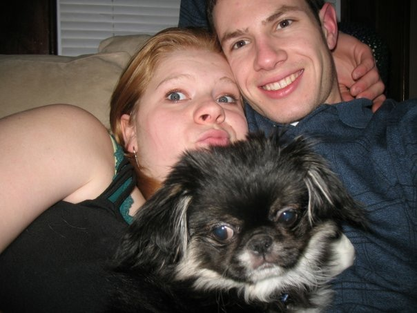
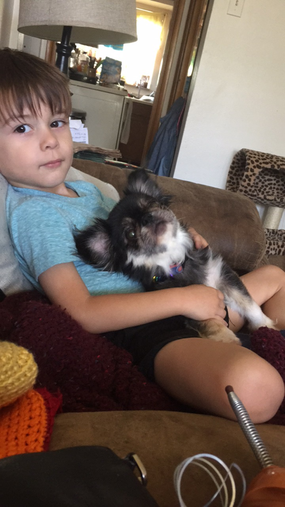
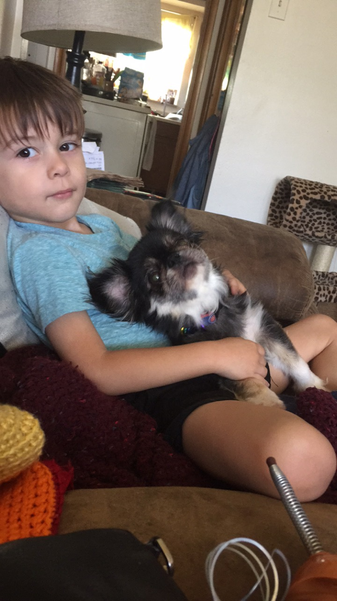

Lupe's exact birthday is unknown but she was created to make the world much cuter in 2009!

In the photo above is Lupe at the tender age of 6 months old, with myself and our dearly departed friend David Matthews.
In November of 2009 someone left Lupe and three other dogs alone in an apartment in Washington, MO. That apartment was owned by my a friend's Aunt.
Upon finding the dogs She quickly went about the task of finding better home for these sweet furballs, I was lucky enough to make the cut.
I hadn't specifically chosen which dog I would be bring home with me. I wanted to let the pup choose me.
I walked in to the room she had been brought to after being rescued, and sat criss cross applesauce on the floor.
A 3lb 7in long living dust bunny trotted up to me and placed itself on my crossed calves and fell asleep.
That is when Lupe picked me.
For almost 13 years now Lupe has been a vigilent presence by my side. In that time we have stuck together through:
- Three relationships.
- Six moves.
- Two surgeries.
- Four breakups.
- The general plight of aging as it affects us both.

Lupe grew to have quite the personality as she got older. She loves peanut butter snacks, Red Hot Riplets and kids. She is less interested in long walks and bath time. Lupe has a habit of snorting at Mom and other humans when they tell her no or fail to gush over how adorable she is upon meeting her. Not much for barking she prefers to to ask for attention by placing her small, squished nose inches from yours and distributing her fur all over your shirt in the process.
Lupe brings joy to all, I hope this introduction to her gave you a smile!
 ,,
,,